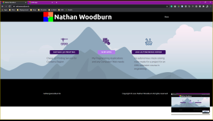
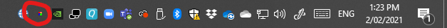

Download
Download latest version here


How to Use
- Download latest version
- Run the Screen Duplicator.exe
- Adjust Settings as needed by right clicking the NJW Apps icon in the task bar
- Top Most: Keeps Screen Duplicator on top of everything
- Show Border: Shows/Hides the windows border
- Click Thru: Enables the user to click underneath the Screen Duplicator window
- Opacity: The Transparency of the Screen Duplicator window
- View Screen: Select which screen to view
- Refresh Time: Select how often the Screen Duplicator's image should refresh